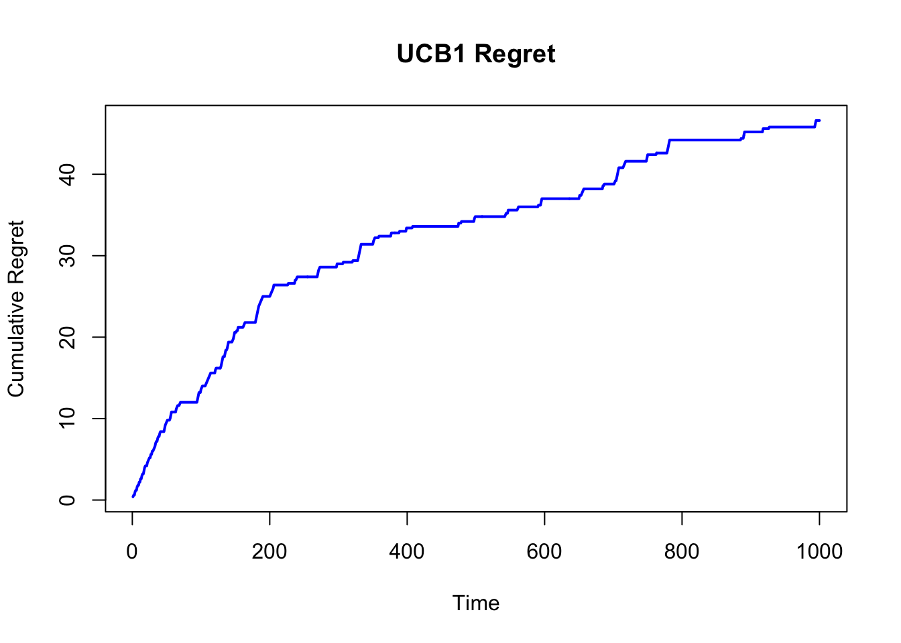
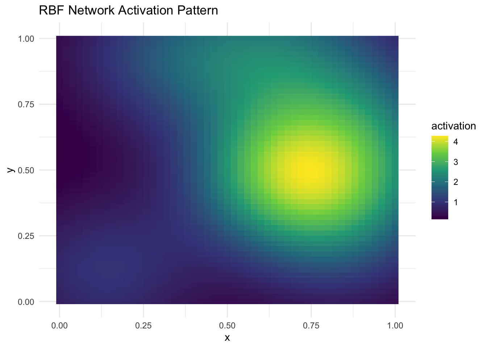
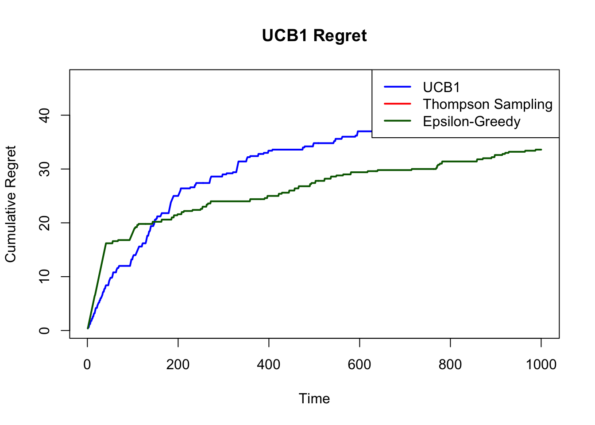

Chapter 2 The Multi-Armed Bandit Problem
2.1 Introduction
The multi-armed bandit (MAB) problem is a foundational model in the study of sequential decision-making under uncertainty. Representing the trade-off between exploration (gathering information) and exploitation (maximizing known rewards), MAB problems are central to reinforcement learning, online optimization, and adaptive experimental design. An agent is faced with a choice among multiple options—arms—each producing stochastic rewards with unknown distributions. The objective is to maximize cumulative reward, or equivalently, to minimize the regret incurred by not always choosing the best arm.
This post presents a rigorous treatment of the MAB problem, comparing frequentist and Bayesian approaches. We offer formal mathematical foundations, develop regret bounds, and implement both Upper Confidence Bound (UCB) and Thompson Sampling algorithms in R. A summary table is provided at the end.
2.2 Mathematical Formalism
Let \(K\) denote the number of arms, and each arm \(k \in \{1, \dots, K\}\) has an unknown reward distribution \(P_k\), with mean \(\mu_k\). Define the optimal arm:
\[ k^* = \arg\max_{k} \mu_k. \]
At each time \(t \in \{1, \dots, T\}\), the agent chooses arm \(A_t \in \{1, \dots, K\}\) and receives a stochastic reward \(R_t \sim P_{A_t}\). The cumulative expected regret is:
\[ \mathcal{R}(T) = T\mu^* - \mathbb{E}\left[ \sum_{t=1}^T R_t \right] = \sum_{k=1}^K \Delta_k \, \mathbb{E}[N_k(T)], \]
where \(\Delta_k = \mu^* - \mu_k\) and \(N_k(T)\) is the number of times arm \(k\) was played.
2.3 Frequentist Approach: UCB1 Algorithm
Frequentist methods estimate expected rewards using empirical means. The UCB1 algorithm, based on Hoeffding’s inequality, constructs an upper confidence bound:
\[ A_t = \arg\max_{k} \left[ \hat{\mu}_{k,t} + \sqrt{ \frac{2 \log t}{N_k(t)} } \right]. \]
This ensures logarithmic regret in expectation.
2.3.1 R Code for UCB1
set.seed(42)
K <- 3
T <- 1000
mu <- c(0.3, 0.5, 0.7) # true means
counts <- rep(0, K)
values <- rep(0, K)
regret <- numeric(T)
# Play each arm once
for (k in 1:K) {
reward <- rbinom(1, 1, mu[k])
counts[k] <- 1
values[k] <- reward
regret[k] <- max(mu) - mu[k]
}
for (t in (K+1):T) {
ucb <- values + sqrt(2 * log(t) / counts)
a <- which.max(ucb)
reward <- rbinom(1, 1, mu[a])
counts[a] <- counts[a] + 1
values[a] <- values[a] + (reward - values[a]) / counts[a]
regret[t] <- max(mu) - mu[a]
}
cum_regret_ucb <- cumsum(regret)
plot(cum_regret_ucb, type = "l", col = "blue", lwd = 2,
ylab = "Cumulative Regret", xlab = "Time", main = "UCB1 Regret")
2.4 Bayesian Approach: Thompson Sampling
Bayesian bandits model reward distributions probabilistically, updating beliefs via Bayes’ rule. For Bernoulli rewards, we assume Beta priors:
\[ \mu_k \sim \text{Beta}(\alpha_k, \beta_k). \]
After observing a reward \(r \in \{0, 1\}\), the posterior update is:
\[ \alpha_k \leftarrow \alpha_k + r, \quad \beta_k \leftarrow \beta_k + 1 - r. \]
The Thompson Sampling algorithm draws a sample \(\tilde{\mu}_k \sim \text{Beta}(\alpha_k, \beta_k)\) and selects the arm with the highest sample.
2.4.1 R Code for Thompson Sampling
set.seed(42)
alpha <- rep(1, K)
beta <- rep(1, K)
regret <- numeric(T)
for (t in 1:T) {
sampled_means <- rbeta(K, alpha, beta)
a <- which.max(sampled_means)
reward <- rbinom(1, 1, mu[a])
alpha[a] <- alpha[a] + reward
beta[a] <- beta[a] + (1 - reward)
regret[t] <- max(mu) - mu[a]
}
cum_regret_ts <- cumsum(regret)
plot(cum_regret_ucb, type = "l", col = "blue", lwd = 2,
ylab = "Cumulative Regret", xlab = "Time", main = "UCB1 Regret")
lines(cum_regret_ts, col = "red", lwd = 2)
legend("topright", legend = c("UCB1", "Thompson Sampling"),
col = c("blue", "red"), lwd = 2)
The UCB1 algorithm guarantees a regret bound of:
\[ \mathcal{R}(T) \leq \sum_{k: \Delta_k > 0} \left( \frac{8 \log T}{\Delta_k} + C_k \right), \]
where \(C_k\) is a problem-dependent constant. Thompson Sampling achieves comparable performance. Under certain regularity conditions, its Bayesian regret is bounded by:
\[ \mathbb{E}[\mathcal{R}(T)] = O\left( \sqrt{KT \log T} \right), \]
and often outperforms UCB1 in practice due to its adaptive exploration.
2.5 Epsilon-Greedy Strategy
The epsilon-greedy algorithm is a simple and intuitive approach to balancing exploration and exploitation. At each time step, with probability \(\epsilon\), the agent chooses a random arm (exploration), and with probability \(1 - \epsilon\), it selects the arm with the highest empirical mean (exploitation). Let \(\hat{\mu}_{k,t}\) denote the empirical mean reward for arm \(k\) at time \(t\). Then:
\[ A_t = \begin{cases} \text{random choice} & \text{with probability } \epsilon, \\ \arg\max_k \hat{\mu}_{k,t} & \text{with probability } 1 - \epsilon. \end{cases} \]
While this algorithm is not optimal in the theoretical sense, it often performs well in practice for problems with stationary reward distributions when the exploration rate \(\epsilon\) is properly tuned.
Regret under a fixed \(\epsilon\) is linear in \(T\), i.e., \(\mathcal{R}(T) = O(T)\), unless \(\epsilon\) is decayed over time (e.g., \(\epsilon_t = 1/t\)), which introduces a trade-off between convergence speed and variance.
2.5.1 R Code for Epsilon-Greedy
set.seed(42)
epsilon <- 0.1
counts <- rep(0, K)
values <- rep(0, K)
regret <- numeric(T)
for (t in 1:T) {
if (runif(1) < epsilon) {
a <- sample(1:K, 1) # Exploration
} else {
a <- which.max(values) # Exploitation
}
reward <- rbinom(1, 1, mu[a])
counts[a] <- counts[a] + 1
values[a] <- values[a] + (reward - values[a]) / counts[a]
regret[t] <- max(mu) - mu[a]
}
cum_regret_eps <- cumsum(regret)
plot(cum_regret_ucb, type = "l", col = "blue", lwd = 2,
ylab = "Cumulative Regret", xlab = "Time", main = "UCB1 Regret")
lines(cum_regret_eps, col = "darkgreen", lwd = 2)
legend("topright", legend = c("UCB1", "Thompson Sampling", "Epsilon-Greedy"),
col = c("blue", "red", "darkgreen"), lwd = 2)
2.6 Summary Table
| Method | Paradigm | Assumptions | Exploration Mechanism | Regret Bound | Strengths | Weaknesses |
|---|---|---|---|---|---|---|
| UCB1 | Frequentist | Stationary, bounded rewards | Upper Confidence Bound | \(O(\log T)\) | Simple, provable guarantees | Conservative, suboptimal in practice |
| Thompson Sampling | Bayesian | Prior over reward distributions | Posterior sampling | \(O(\sqrt{KT})\), empirically better | Adaptive, efficient with good priors | Sensitive to prior misspecification |
| KL-UCB | Frequentist | Known reward distributions | KL-divergence bounds | \(O(\log T)\) (tighter) | Distribution-aware | More complex implementation |
| Epsilon-Greedy | Heuristic | None | Random exploration | \(O(T)\) if \(\epsilon\) fixed | Very simple | Inefficient long-term |
2.7 Conclusion
The multi-armed bandit problem remains an essential model for studying decision-making under uncertainty. While frequentist methods like UCB1 provide rigorous guarantees and conceptual clarity, Bayesian approaches like Thompson Sampling offer greater flexibility and empirical performance. The choice between them hinges on the trade-offs between interpretability, adaptivity, and prior knowledge.
The R implementations provided here allow for practical experimentation and benchmarking. In real-world applications, such as clinical trial design, online recommendations, and adaptive A/B testing, these algorithms offer principled foundations for learning and acting in uncertain environments.